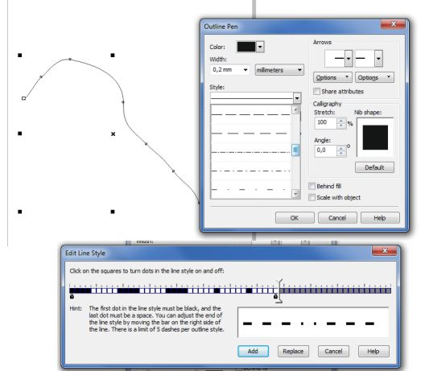

Работа с кривыми
Baholdin90 / 24.08.2013, 00:15
Форум:
Версия программы:
13.0.0.739 (sp2)
Подскажите, как можно перевести кривую в штрихи определенного размера и интервала?
Подскажите, как можно перевести кривую в штрихи определенного размера и интервала?
сюда заглядывали хоть бы раз?

Заглядывал. Мне нужны штрихи длинной 15мм с интервалом 10мм на прямой длинной 400мм
Рисуем 1 штрих длиной 15мм , window-dockers-tranformations-position (или alt+f7). Там задаем смещение по Х в 25мм (или У если нужно вертикально), выставляем направление смещения (точка справа посередине) и плодим копии кнопкой применить до достижения результата. Как длина получена выделяем все и жмем Combine (ctrl+l) чтобы преобразовать результат в единый обьект, либо пользуемся инструментами формирования кривой.
Оно? Правда у меня при твоих исходных данных получилась пунктирная линия длиной 390 или 415 мм
У меня есть контур фигуры в кривой с множеством скруглений и сгибами под разными углами, можно ли его перевести в штрихи?
а говорите заглядывали ....
заходите в окно контура F12 - задаёте толщину контура 1 мм - в выпадающем списке - выбираете примерно похожий стиль - жмете Редактировать стиль - ползунками и указателем задаете черную полоску в 15 делений - белую - 10 делений - в конце замок. Указываете - внизу кнопочкой Добавить - Для проверки нарисуйте прямую линию и на ней проверьте - Выделяете вашу изогнутую с множеством скруглений и сгибов кривую - и в окне Свойства контура задаете созданный стиль - если галка Масштабировать с объектом снята - то даже при масштабировании кривой - заданные параметры длины штриха и пробела сохранятся. Минус один - если вы измените толщину контура - скажем до 0,5 мм - параметры длины и пробела тоже "уедут" вдвое - поэтому "танцевать" надо от нужной толщины контура - задать для 1 мм и после пропорционально скорректировать - т.е. для толщины 0,5 мм - в стиле надо будет задать не 15/10 делений, а 30/20
Удачи. =)
Большое спасибо, очень помогли
А можно ли разбить на штрихи тех же параметров имея толщину кривой сверхтонкий абрис?